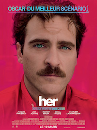
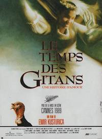

I worked at Le Collectionist for 3 years as head of Supply - i was in charge of developing the owner network, and the portfolio of properties that we suggest on our platform. This job was also about the e-merchandising of the properties on our platform. I joined Le wagon in order to learn the technical skills to work closer to the development team and because I am looking for something more creative.
|  |
2013 - HerEn 2025 à Los Angeles, Theodore travaille pour un site web comme écrivain public, rédigeant des lettres manuscrites de toutes sortes - familiales, amoureuses, etc. - pour d'autres. Son épouse Catherine et lui ont rompu depuis bientôt un an mais il ne se décide pas à signer les papiers du divorce. Dans un état de dépression qui perdure, il installe un nouveau système d'exploitation OS1, auquel il donne une voix féminine. |
|  |
1988 - Le Temps des GitansPerhan, jeune Rom élevé par sa grand-mère, avec sa soeur handicapée, Danira, dans un bidonville de la communauté tzigane, tombe amoureux d'Azra, la fille de la voisine. Il ne peut l'épouser en raison de sa pauvreté. Pour sortir de la misère, il se laisse convaincre par Ahmed de partir travailler en Italie avec lui. |
1994 - Forrest GumpAu fil des différents interlocuteurs qui viennent s'asseoir tour à tour à côté de lui sur un banc, Forrest Gump raconte la fabuleuse histoire de sa vie. Sa vie est à l'image d'une plume qui se laisse porter par le vent, tout comme Forrest se laisse porter par les événements qu'il traverse dans l'Amérique de la seconde moitié du 20e siècle. |